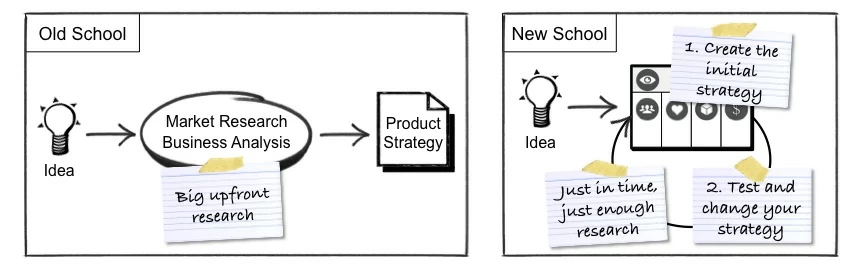

What is the Product Vision Board?
Created by famous product management expert Roman Pichler, the Product Vision Board was designed to help product leaders describe their vision and high-level strategy. This canvas uses five sections:
- The product vision;
- Targeted customers of your product;
- Needs of your targeted customers;
- Main and differentiating product features;
- Business goals, i.e., why it is worthwhile for your organization to invest in this product.
This exercise forces the development team and the stakeholders to build a shared understanding of the product vision and state the high-level hypothesis on which the strategy is built. This workshop forces the organization to write it down and foster alignment in the long run. It is the opportunity to answer key but often neglected questions such as: Why will this product positively impact the world? Why us? Why now?
At first sight, the Product Vision Board workshop can seem quite formal, but experience proves that the product vision is too rarely shared and understood in the same way by all people involved in a project. Furthermore, suppose your product development process is Agile. In that case, this exercise can also be embedded in a feedback loop, giving you the possibility to adjust your vision and your strategy as you collect more and more data about your market and your customers.
Why is it crucial to create a compelling product vision?
A good product vision must be explicit, intelligible, simple to remind, and shared by all people involved. If defined well, it would contribute to orientate decisive strategic decisions, rally stakeholders, and give a sense of purpose to employees.
Especially in a VUCA world (Volatile, Uncertain, Complex, and Ambiguous), the product vision can be compared to the polar star for sailors: it helps the development team stay focused on what really matters for their customers in terms of proposition value (more about creating a product vision in the Product Roadmap example).
In addition to giving a sense of purpose and rallying stakeholders, taking a moment to think collectively about the product vision is an opportunity to underscore what high-level features make your product so special and why you are the best to offer it to your customers now. Your product strategy must encompass your unique selling points compared to your competitors, helping your team to leverage those advantages in each initiative or decision made.
A few pieces of advice to run this workshop successfully
First, like in the Lean Startup Canvas, it is essential to focus on one or several homogeneous market segments. Trying to address too many unrelated personas can lead to not satisfying any.
Second, to assess the level of your proposition value and how much your clients would pay for your product, you need to adopt an empathic approach by putting yourself in their position and understand precisely what problems they face and what their needs are.
Don’t mix clients’ needs and product features up. Client’s needs address the behavior and the motivations of your clients, whereas product features only concern you and your product. And, before testing your product in actual conditions, you can’t be absolutely sure that your product features are the best ones to satisfy your clients’ needs.
Third, even if you can be pursuing several goals in parallel, it is imperative to prioritize them. Regularly reminding your team and stakeholders of the main goal will help you bring everyone to make the right decisions, those that create value for your customers.
Suggested resources to go further
- Roman Pichler’s introduction the exercise: The Product Vision Board
- A rich Medium article by Robbin Schuurman, professional Scrum Trainer: The Product Vision Board — A tool for creating your Product Vision
- An essential video which presents the method by Roman Pichler himself: An Introduction to the Product Vision Board